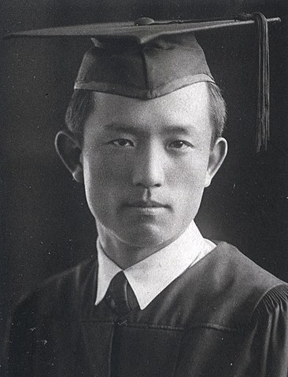

윤동주(尹東柱, 1917년 12월 30일 ~ 1945년 2월 16일)는 한국의 독립운동가, 시인, 작가이다. 본관은 파평(坡平). 중국 만저우 지방 지린 성 연변 용정에서 출생하여 명동학교에서 수학하였고, 숭실중학교와 연희전문학교를 졸업하였다. 숭실중학교 때 처음 시를 발표하였고, 1939년 연희전문 2학년 재학 중 소년(少年) 지에 시를 발표하며 정식으로 문단에 등단했다.
일본 유학 후 도시샤 대학 재학 중, 1943년 항일운동을 했다는 혐의로 일본 경찰에 체포되어 후쿠오카 형무소(福岡刑務所)에 투옥, 100여 편의 시를 남기고 27세의 나이에 옥중에서 요절하였다. 사인이 일본의 소금물 생체실험이라는 견해가 있고 그의 사후 일본군에 의한 마루타, 생체실험설이 제기되었으나 불확실하다. 사후에 그의 시집 《하늘과 바람과 별과 시》가 출간되었다.
일제 강점기 후반의 양심적 지식인의 한 사람으로 인정받았으며, 그의 시는 일제와 조선총독부에 대한 비판과 자아성찰 등을 소재로 하였다. 그의 친구이자 사촌인 송몽규 역시 독립운동에 가담하려다가 체포되어 일제의 생체 실험 대상자로 분류되어 의문의 죽음을 맞는다. 그의 창씨개명 '히라누마'가 알려져 1990년대 후반 이후 논란이 일기도 했다. 본명 외에 동주(童柱)와 윤주(尹柱)라는 필명도 사용하였다.